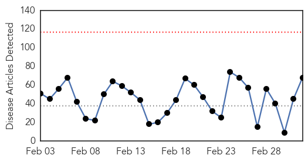
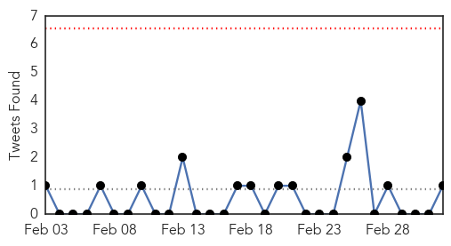
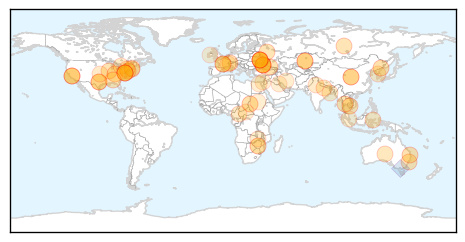

30 Day Trends
Web: 0 alerts, 0 warnings
Twitter: 0 alerts, 0 warnings
Top Articles:
- 0.982
- Hong Kong reports sixth H7N9 bird flu case
- 0.942
- Flu no longer widespread in Rhode Island
- 0.937
- Drinking water in Brisbane linked to infections
- 0.917
- Chicago Tribune
- 0.917
- Chicago Tribune
- 0.917
- Chicago Tribune
- 0.917
- Chicago Tribune
- 0.917
- Chicago Tribune
- 0.917
- Chicago Tribune
- 0.917
- Chicago Tribune
- 0.917
- Chicago Tribune
- 0.917
- Chicago Tribune
- 0.917
- Chicago Tribune
- 0.910
- The world windows to Thailand
- 0.910
- The world windows to Thailand
- 0.895
- Dozens More Sick From Salmonella Cases
- 0.892
- Beware of mosquitoes carrying viruses
- 0.866
- Alabama House passes bill banning abortions after fetal heartbeat
- 0.866
- White House calls Russia's ICBM test launch 'routine'
- 0.866
- Russia notified US ahead of ICBM test, U.S. official says
- 0.866
- Russia test-fires ICBM amid tension over Ukraine
- 0.866
- Talks under way with Russia at ministerial level
- 0.866
- Putin, China's Xi hold "close" views on Ukraine, Kremlin says
- 0.866
- Russia's Putin denies Yanukovich rumours, says met him two days ago
- 0.866
- Russia's Putin told Yanukovich he has "no political future"
- 0.866
- Russia's Putin denies Russian troops took Crimea
- 0.866
- Poland summons Russian ambassador over Ukraine crisis
- 0.866
- Ukraine confirms OSCE to go to Crimea, situation there "stable"
- 0.866
- Finnish defence minister postpones Russia visit due to Ukraine
- 0.765
- Study Adds to Evidence That HPV Vaccine Helps Guard Against Cervical Cancer
- 0.758
- Justina Pelletier’s medical child abuse case: 5 things to know about mitochondrial disease
- 0.752
- Study Adds to Evidence That HPV Vaccine Helps Guard Against Cervical Cancer
- 0.746
- Park studies spread of snail fever
- 0.741
- UP kids’ killer disease spread through lice, expert panel finds
- 0.689
- A Food Safety Cautionary Tale
- 0.685
- N. Korea remains mum on S. Korea's aid offer over FMD
- 0.677
- UN seeks $60m to feed hungry Zimbabweans
- 0.659
- UN to assist after food crisis in Zimbabwe worsens
- 0.657
- Food safety watchdog can't confirm link between animal feed, deadly pig virus
- 0.655
- The Voice of Russia: News, Breaking news, Politics, Economics, Business, Russia, International current events, Expert opinion, podcasts, Video
- 0.646
- Mistakes may be common in prescribing antibiotics in US
- 0.637
- CDC 'Sounds the Alarm' on Antibiotic Use
- 0.637
- Health department panel to hear city doctors’ complaints
- 0.636
- Public Health Experts Strongly Support Dr. Vivek Murthy as the next Surgeon General -- WASHINGTON, March 3, 2014 /PRNewswire-USNewswire/ --
- 0.635
- Mistakes may be common in prescribing antibiotics in US
- 0.630
- India makes Oral Polio Vaccination (OPV) Must for Visitors
- 0.600
- Zim 'faces poor harvest despite good rains'
- 0.569
- UN seeks $60m to feed Zim’s 2mln hungry
- 0.558
- MSF warns of deteriorating security in Unity state's Leer county
- 0.556
- Warning over wind turbine syndrome
Showing top 50 articles...
Top Tweets:
- 0.633
- 10 Days Until 'Flu Launch' ...
- 0.630
- somos de esas pocas personas... Me disfruto hasta el olor peculiar del viento en la cara
- 0.590
- Although the flu and common cold have similar symptoms, the flu tends to be more severe. Know the symptoms! http://t.co/XGdPXqpzNF
Web/News Articles
Tweets
Article Locations
Article Confidences